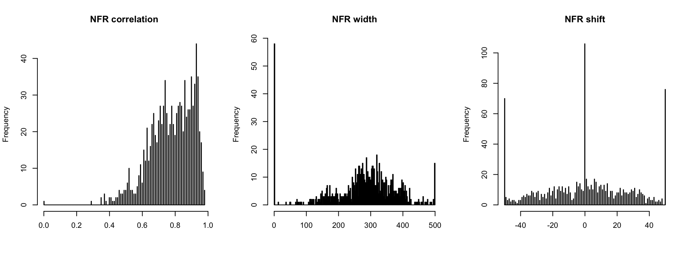

Determining NFR length by cross-correlation
Nucleosome Data by MNase-seq
- dyad coverages are centered at different kind of sites
- transcription factor (TF) motif (PWM) positions
- transcription start sites etc.
- goal is to estimate the distance between the flanking nucleomes
- aka NFR (nucleosome “free” region) length
Method Description
- the method is inspired by Ocampo et al. 2016 NAR
- 2 Gaussian distributions mimic 2 flanking nucleosomes with known distance (theoretical pattern)
- for each site the MNase signal is compared to the theoretical pattern (by cross-correlation)
- the actual distance for the given site is selected by maximizing the cross-correlation
### helper functions ###
gaussmf <- function (x, sigma, mean) {
height <- 1
mfVals = (height * exp(-(((x - mean)^2)/(2 * (sigma^2)))))
mfVals
}
makeNFR <- function(d, beforeRef, afterRef){
apply(sapply(c(-0.5,0.5), function(x) {gaussmf(seq(-beforeRef, afterRef), 40, x * d)}), 1, sum)
}
scaler <- function(x){
(x - min(x)) / (max(x)-min(x))
}
### main function ###
calcNFRlength <- function(my_mat,
beforeRef = 200,
afterRef = 200,
mc.cores = 16){
my_mat <- my_mat[complete.cases(my_mat),]
my_filter <- apply(my_mat, 1, function(x){ sum(x > 1e-10) > (length(x)/2) })
my_mat <- my_mat[my_filter,]
my_mat_sub <- my_mat[, (ceiling(ncol(my_mat)/2)-beforeRef):(ceiling(ncol(my_mat)/2)+afterRef-1)]
res <- parallel::mclapply(1:nrow(my_mat_sub), mc.cores = mc.cores, function(ridx){
rx <- scaler(my_mat_sub[ridx, ])
bestR <- 0
spacingV <- NA
shiftV <- NA
if(round(sd(rx), 3) != 0 & sum(is.na(rx)) == 0){
for (d in 1:500) {
y <- makeNFR(d = d, beforeRef = beforeRef, afterRef = afterRef)
my_ccf <- ccf(rx,y, lag.max = 50, plot=FALSE)
r <- max(my_ccf$acf)
shift <- my_ccf$lag[my_ccf$acf == r]
if (r > bestR) {
bestR <- r
shiftV <- shift
spacingV <- d
}
}
}
c(r = round(bestR, 2), space = spacingV, shift = shiftV)
})
df <- t(as.data.frame(res))
rownames(df) <- rownames(my_mat_sub)
return(df)
}Yeast Data
- in vivo MNase-seq from yeast (S.cerevisae)
- centered at TF sites
# load TF centered matrix
load("data_NFRlength/smooth.mat.TF.yeast.invivo.MNase.rda")
# read NFR data (pre-calcultaed)
df <- read.table("data_NFRlength/NFRlength.TF.yeast.invivo.MNase.txt", row.names = 1, header = T)# use +/- 200 bp from the center
beforeRef <- 200
afterRef <- 200# do not run here - takes some minutes
# df <- calcNFRlength(my_mat = my_mat,
# beforeRef = beforeRef,
# afterRef = afterRef)
head(df)## corr length shift
## 1 0.71 279 -10
## 2 0.51 112 24
## 3 0.67 421 40
## 4 0.87 1 -50
## 5 0.68 353 50
## 6 0.97 320 6- the greater the correlation is the more similar is the actual pattern to the theoratical
- length indicates the NFR length
- shift indicates how far the signal had to be shifted from the center to get the max correlation
Heatmap Visualization
# heatmap ordered by NFR length
library(RColorBrewer)
par(mfrow=c(1,1), oma=c(2,0,0,0))
my_mat_hm <- my_mat
my_mat_hm[my_mat_hm > 2e-3 ] <- 2e-3
my_order <- order(df[,2], decreasing = T)
image(t(my_mat_hm[rev(my_order),]),
main = "Nucleosomes centered at TF",
col = colorRampPalette(rev(brewer.pal(n = 7, name ="RdYlBu")))(100),
breaks = seq(min(my_mat_hm), max(my_mat_hm), length.out = 101),
xaxt="n", yaxt="n",
useRaster = T)
axis(side = 1, at = seq(0,1, length.out = length(seq(-beforeRef, afterRef, 100))),
labels = seq(-beforeRef, afterRef, 100))
axis(side = 2, at = 0.5, labels = "sorted by NFR length", tick = F)
Exploring the Values
# check distributions
par(mfrow=c(1,3), oma=c(2,0,0,0))
hist(df[,1], breaks = 500, main = "NFR correlation", xlab="")
hist(df[,2], breaks = 250, main = "NFR length", xlab="")
hist(df[,3], breaks = 500, main = "NFR shift", xlab="")Example Sites
# choose examples by interesting values
examples <- c(which(df[,2] > 0 & df[,2] <= 1 & df[,1] > 0.9)[1],
which(df[,2] > 165 & df[,2] <= 170 & df[,1] > 0.9)[1],
which(df[,2] > 295 & df[,2] <= 305 & df[,1] > 0.9)[1],
which(df[,2] > 499 & df[,2] <= 500 & df[,1] > 0.6)[1],
which(df[,2] > 0 & df[,2] <= 1 & df[,1] < 0.7)[1],
which(df[,2] > 165 & df[,2] <= 170 & df[,1] < 0.7)[1],
which(df[,2] > 295 & df[,2] <= 305 & df[,1] < 0.7)[1],
which(df[,2] > 499 & df[,2] <= 500 & df[,1] < 0.6)[1])
par(mfrow=c(2,4), oma=c(0,0,2,0))
for(sidx in examples){
my_pattern <- makeNFR(d = df[sidx,2], beforeRef = beforeRef, afterRef = afterRef)
plot(df[sidx,3]:(length(my_pattern)+df[sidx,3]-1), my_pattern, type="l", xlab = "", xaxt ="n", ylab="Density", main = "")
axis(side = 1, at = seq(df[sidx,3],(length(my_pattern)+df[sidx,3]-1), 100), labels = seq(-beforeRef, afterRef, 100))
mtext(paste("corr =", df[sidx,1],"length =", df[sidx,2], "shift =", df[sidx,3]), side = 3, line = 1, cex = 0.8)
lines(scaler(my_mat[sidx,(ceiling(ncol(my_mat)/2)-beforeRef):(ceiling(ncol(my_mat)/2)+afterRef-1)]), col="red3")
}
mtext(text = "Examples", side = 3, outer = T, font = 2)
par(fig = c(0,1,0,1), mar=c(0,0,0,0), new = TRUE)
plot(0,0, xlab="", ylab="", xaxt="n", yaxt="n", bty="n", type="n" )
legend("center", legend = c("Actual", "Theoretical"),
horiz = TRUE, pch=19, col= c("red3", "black"), cex=1.25, bty="n")
- length = 1 (no distance) means that a single nucleosome is sitting in the center
- length = 500 suggests a nucleosome on one side only (not be a real NFR?)
- lower correlation values might give a reasonable length although the pattern is more noisy